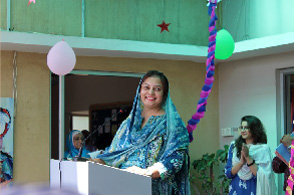

About Us
Established in Karachi in 2011, The Zaki's Academy is today one of the largest private school networks in Pakistan with branches in all the major cities across the country. It currently has 185 schools in 52 cities with over 126,000 students in 458 owned and franchised schools. The Zaki's Academy continues to expand its reach to meet the demands for quality education. The knowledge and skills-based curriculum derived from the UK national curriculum guides students from Nursery to Cambridge International Examinations (for the 16 and 18 year age group), qualifying them for the IGCSE, and O and A Level examinations. The uniform implementation of the curriculum gives parents, students, and teachers the advantage of a smooth and efficient transfer from one school to another within the system.
Graduates from The Zaki's Academy secure positions in top universities worldwide. Our students, according to Cambridge International Examinations annual results analysis, are amongst the highest achievers in their city, their country and, in some cases, in the world. The curriculum encourages a student-centred approach where learners have an active role in their learning process and develop the skills and ability to make a significant contribution to society. Its particular strength lies in the integration of digital media and ICTs in an array of learning programmes.
Message from the Principal
It is with great pleasure that I welcome you to the website of Zaki's Academy A Level Campus. ZA A Level is a student centered educational institution dedicated exclusively to preparing students for A level exams and helping them meet the requirements of admissions to institutions of higher learning both locally and internationally. Our aim is to help students develop an attitude of gratitude while striving to contribute to the betterment both the immediate environment as well as society at large.
ZA A Level is committed to carrying forward the work of building pupils’ intelligence and character which is shaped by the FPS schooling system at its junior branches. ZA A Level has been committed to providing quality education while upholding our core values and instilling in our students a sense of pride as well as purpose, the hallmarks of an attitude of positivity.
We strive to create a caring environment for our students by laying emphasis on the values of compassion, respect and equality. Our students regularly take part in community work despite their grueling study schedules. We have a rich sports program which allows our young adults the opportunity to engage with each other through healthy competition. Through school clubs activities students can show case their creative talents and hone in their communication and performance skills.
We at ZA believe that students must learn to manage their time responsibly and strike a balance between academic and extra-curricular activities. The school does not compromise on discipline. Student attendance is closely monitored throughout the year.
The presence of a biometric system streamlines student attendance management. Technology is harnessed in other ways too. Our classrooms are equipped with multimedia systems and are completely air conditioned.
Our stellar faculty is drawn from among the most experienced and qualified cadres of teachers in the city. We aim create the right conditions conducive to academic learning and holistic development of the student body.
Please utilize this website to learn more about our school. A virtual tour is no substitute to visiting the premises though, and discovering firsthand the facilities available. I encourage you to visit our school at any time at your convenience. I look forward to receiving you and answering any queries you may have.
Saima Raiza
Principal